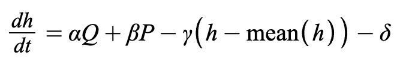
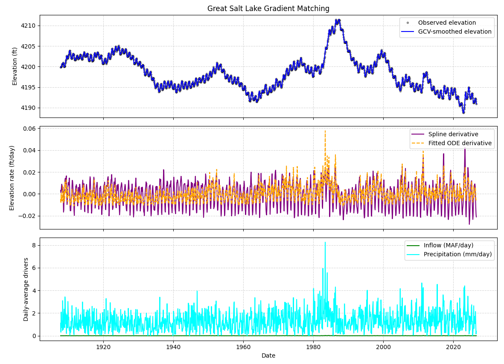
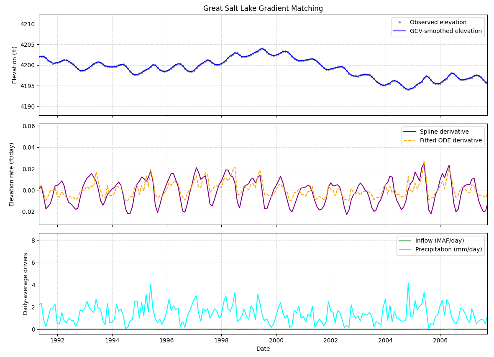

Gradient matching bypasses full ODE integration during parameter estimation by directly aligning the time-derivatives of a smooth data-fit with the vector field defined by the differential equation.
The predetermined ODE that was used during this process of gradient matching is as follows.

Note: (h - mean(h)) s an empirical elevation-feedback term, it makes the modeled rate of elevation change decrease as elevation rises.
After applying gradient matching to the ODE, the coefficients were found to be
The resulting graphs are as follows.

